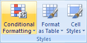

Free
computer Tutorials
|
Free
computer Tutorials
|
|
 HOME HOME
|
|
||||
Microsoft Excel 2007 to 2010Conditional Formatting
You can use something called Conditional Formatting in your Excel spreadsheets. Conditional Formatting allows you to change the appearance of a cell, depending on certain conditions. What we'll do is to colour the Overall Averages on our Student Exam spreadsheet, depending on the grade. Here's the spreadsheet we'll be working on.
The Overall Averages range from 44 to 85. We'll colour each grade, depending on a scale. A different colour will apply to the following grades:
So five different bands, and a colour for each. To set the Conditional Formatting in Excel, do the following:
 The Conditional Formatting menu gives you various options. The easiest one is the Colour Scales option. Select one of these and Excel will colour the cell backgrounds for you:
That's not quite what we're looking for, though. We'd like to choose our own values. So click on More Rules, from the Colour Scales submenu. You'll see the following rather complex dialogue box:
The one we want is the second option, Format only cells that contain. This will allow us to set up our values. When you click this option, the dialogue box changes to this: The part we're interested in is the bottom part, under the heading Edit the Rule Description. It says Cell Value and Between, in the drop down boxes. These are the ones we want. We only need to type a value for the two boxes that are currently blank in the image above. We can then click the Format button to choose a colour.
So type 0 in the first box and 50 in the second one: Then click the Format button. You'll get another dialogue box popping up. This is just the Format Cells one though. You've met this before. Click on the Fill tab and choose a colour. Click OK and you should see something like this under Edit the Rule Description: The Preview is showing the colour we picked. So we've said, "If the Cell Value is between 0 and 50 then colour the cell Red". Click OK on this dialogue box to get back to Excel. You should find that one of the cells has turned red. To format the rest of the cells, click on Conditional Formatting on the Styles panel again. From the menu, click on Manage Rules: You'll get yet another complex dialogue box popping up! This one: Our first rule is already there - Cell Value Between. The only thing we're doing here is adding New Rules, similar to the one we've just set up. Click the New Rule button then. You'll see the exact same dialogue boxes you used to set up the first rule. Set a new colour for the next scores - 51 to 60. Choose a colour, and keep clicking OK until you get back to the Rules Manager dialogue box. It should now look something like this one:
We now have to colours in our range. Do the rest of the scores, choosing a colour for each. The scores are these, remember:
When you've done them all, your dialogue box should have five colours: The colours above are entirely arbitrary, and you don't have to select the same ones we did. The point is to have a different colour for each range of scores. But click OK when you're done. Your Overall Averages will then look something like this: Formatting your spreadsheet in this way allows you to see at a glance relevant information. In the spreadsheet above, it's obvious who's failing - just look for the red cells!
In the next part, we'll look at a useful function that counts things - COUNT IF. |
|||||
|